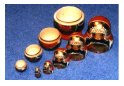

Dilworth is the world's most prominent collector of Russian nested dolls: he literally has thousands of them! You know, the wooden hollow dolls of different sizes of which the smallest doll is contained in the second smallest, and this doll is in turn contained in the next one and so forth. One day he wonders if there is another way of nesting them so he will end up with fewer nested dolls? After all, that would make his collection even more magnificent! He unpacks each nested doll and measures the width and height of each contained doll. A doll with width w1
and height h1
will fit in another doll of width w2
and height h2
if and only if
w1 < w2
and
h1 < h2
. Can you help him calculate the smallest number of nested dolls possible to assemble from his massive list of measurements?

On the first line of input is a single positive integer
1 t20
specifying the number of test cases to follow. Each test case begins with a positive integer
1m20000
on a line of itself telling the number of dolls in the test case. Next follow 2m
positive integers
w1, h1, w2, h2,..., wm, hm
, where wi
is the width and hi
is the height of doll number i
.
1wi, hi10000
for all i
.
t20
specifying the number of test cases to follow. Each test case begins with a positive integer
1m20000
on a line of itself telling the number of dolls in the test case. Next follow 2m
positive integers
w1, h1, w2, h2,..., wm, hm
, where wi
is the width and hi
is the height of doll number i
.
1wi, hi10000
for all i
.
For each test case there should be one line of output containing the minimum number of nested dolls possible.
4
3
20 30 40 50 30 40
4
20 30 10 10 30 20 40 50
3
10 30 20 20 30 10
4
10 10 20 30 40 50 39 51
1
2
3
2